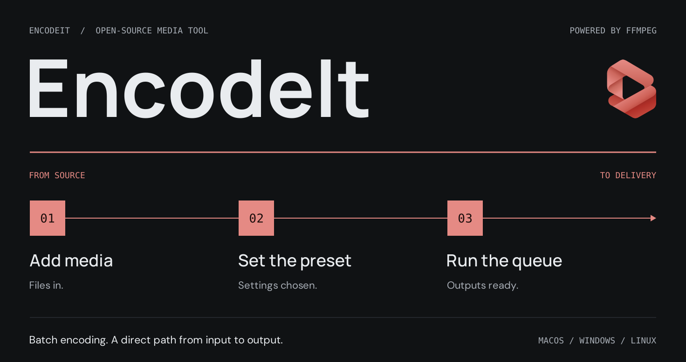

Queue · Presets · FFmpeg
Encode once. Deliver everywhere.
Open-source batch media encoding with a queue and preset browser — on Windows, macOS, and Linux. Watch folders hand off from After Effects, Premiere Pro, and DaVinci Resolve.
In the app
Dark asphalt chrome and coral accents — add sources, pick a preset, start the queue, then deliver to your output path. Host apps export into watch folders; EncodeIt encodes after the file settles.


Download
Current version 1.0.1. Packaged installers replace an older build and keep your settings. Older packages stay in Releases.
Also available: Windows portable, macOS PKG / zip, Linux
.deb, and the optional AE CEP zip — see
v1.0.1.